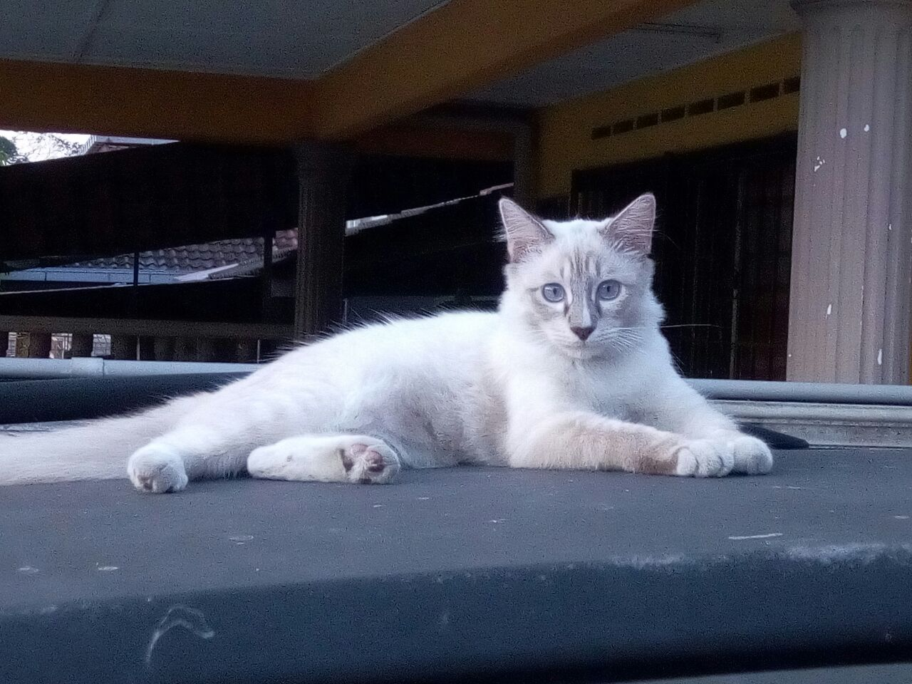
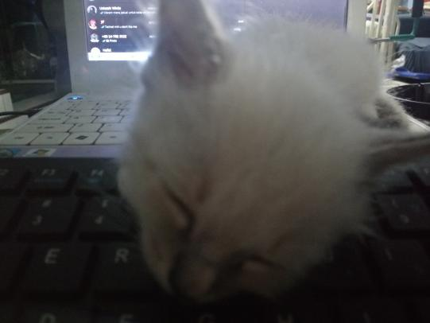

My Pet

I have a pet cat named Sky. He is a white male cat. We call him sky because he was born on the roof of my grandparents' house. When he was a little kitten, he fell from the roof to the second floor of the house. His siblings were safe up there in the roof and his mother did not want him anymore when we tried to give hime back

My family decided to take him in and raise him as our own cat. We brought him back home and laid a blanket in a box for him to sleep in. We had to feed him milk from a bottle since his mother abandoned him. He was hesitant at first but eventually he got used to it. One of us would have to wake up every 2 hours to feed him milk, even if it was in the middle of the night. I was given that duty at night because I'm usually awake finishing up my homework or playing gammes until around 2am. Fast forward 6 months and now he is a grown up cat. We are very happy that he's been living healthily even though he was not raised like other cats.